<!-- .slide: class="title-slide opening-slide" --> # Deep Learning Perception ## for Autonomous Driving **Gabriele Graffieti** <span class="subtitle">From photons and point clouds to a scene a car can act on</span> <div class="title-meta"> <span>Autonomous Driving and ADAS Technologies</span> <span>Nov. 9, 2026</span> </div> --- <!-- .slide: class="no-fragments" --> ## Who I am <div class="two-c-container"> <div class="two-c-col-l"> </div> <div class="two-c-col-r"> <ul> <li>Sr. Algorithm Engineer @ <a href="https://www.ambarella.com">Ambarella</a> <ul><li>Deep Learning & Computer Vision</li></ul> </li> <li>Past Head of AI Research @ <a href="https://www.aiforpeople.org">AI for People</a></li> <li>Past researcher & PhD student @ <a href="https://www.unibo.it/en">University of Bologna</a></li> <li>Research interests: autonomous driving, continual learning, GenAI, and AI safety</li> </ul> </div> </div> --- ## Outline - **Foundations**: the autonomous-driving stack, sensors, and four hard problems - **Representations**: images, point clouds, BEV, occupancy, and vectors - **Core tasks**: detection & tracking, occupancy & free space, mapping & topology, motion forecasting—each with key papers and a hands-on project - **Fusion & multitask**: sensor fusion, BEVFusion, UniAD, and PARA-Drive - **Evaluation & risks**: metrics, deployment KPIs, and failure modes - **Frontiers**: generative simulation, world models, end-to-end driving, and VLMs/VLAs --- <!-- .slide: class="no-fragments" --> ## Prerequisites This talk assumes basic familiarity with: - Vectors, matrices, tensors, and basic linear algebra - Supervised learning, losses, and gradient descent - Neural networks and convolutional neural networks - Sequence models, attention, and Transformers No prior knowledge of autonomous driving is required. <div class="space-small"></div> <div class="callout activity fragment" data-fragment-index="1"> <span class="tag">Choose your path</span> <p class="mini">Need a quick refresher? Press <b>↓</b><br>Ready for autonomous driving? Press <b>→</b></p> </div> -- <!-- .slide: data-visibility="uncounted" class="optional-slide" --> ## Vectors, matrices, and tensors <ul> <li class="fragment" data-fragment-index="0"><strong>Scalar</strong>: one value, such as a loss or learning rate</li> <li class="fragment" data-fragment-index="1"><strong>Vector</strong>: an ordered list, such as velocity or a feature embedding</li> <li class="fragment" data-fragment-index="2"><strong>Matrix</strong>: a 2D grid, such as a grayscale image or a linear transformation</li> <li class="fragment" data-fragment-index="3"><strong>Tensor</strong>: an <em>n</em>-dimensional array—the general container used by deep-learning frameworks</li> </ul> <div class="callout example fragment" data-fragment-index="4"> <span class="tag">Example</span> <p class="mini">Surround-view video → 6D tensor:<br>batch × time × cameras × channels × height × width</p> </div> <div class="callout example fragment" data-fragment-index="5"> <span class="tag">Not everything is a grid</span> <p class="mini">LiDAR sweep → N × 4 set of points (x, y, z, intensity):<br>no natural order, and N changes from sweep to sweep</p> </div> -- <!-- .slide: data-visibility="uncounted" class="optional-slide" --> ## Neural Networks - Built from artificial neurons: <span class="math-inline">h = σ(w<sup>T</sup>x + b)</span> - Neurons side by side form a layer; stacking layers forms a (deep) neural network that learns a parameterized mapping <span class="math-inline">ŷ = f<sub>θ</sub>(x)</span> from examples - Each layer transforms simple input features into increasingly meaningful representations - Non-linear activations (Tanh, Sigmoid, ReLU, etc.) let stacked layers model complex functions - Training chooses parameters <span class="math-inline">θ</span> (weights and biases) that minimize a task-specific loss: <span class="math-inline">θ<sup>*</sup> = arg min<sub>θ</sub> L(f<sub>θ</sub>(x), y)</span> -- <!-- .slide: data-visibility="uncounted" class="text-align-center optional-slide" --> <p>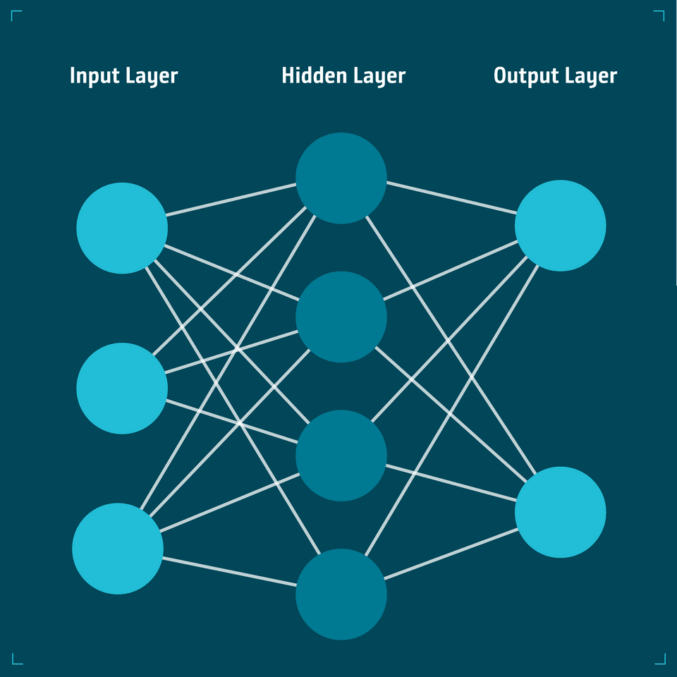</p> -- <!-- .slide: data-visibility="uncounted" class="optional-slide" --> ## Backpropagation <ul> <li class="fragment" data-fragment-index="0"><strong>Forward pass</strong>: compute predictions and the loss</li> <li class="fragment" data-fragment-index="1"><strong>Backward pass</strong>: apply the chain rule from the loss back through every operation</li> <li class="fragment" data-fragment-index="2"><strong>Gradients</strong>: measure how each parameter affects the loss</li> <li class="fragment" data-fragment-index="3"><strong>Optimizer step</strong>: update parameters in the direction that reduces the loss</li> </ul> <div class="equation fragment" data-fragment-index="4">θ ← θ − η · ∂L / ∂θ</div> -- <!-- .slide: data-visibility="uncounted" class="optional-slide" --> ## CNNs: why they fit images - **Local receptive fields**: nearby pixels are strongly related, so each filter initially examines a small neighborhood - **Growing context**: stacking layers expands the receptive field—from edges and textures to parts and complete objects - **Weight sharing**: the same filter scans every position and can recognize a feature wherever it appears - **Parameter efficiency**: a convolution uses <span class="math-inline">k² C<sub>in</sub> C<sub>out</sub></span> parameters, independent of image width and height - **Translation equivariance**: shifting the input shifts the feature map instead of requiring the pattern to be relearned - **Spatial output**: CNNs preserve feature maps, making them natural backbones for detection and segmentation -- <!-- .slide: data-visibility="uncounted" class="text-align-center optional-slide" --> <p>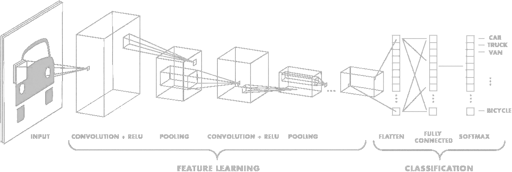</p> <div class="source">Figure: <a href="https://medium.com/towards-data-science/a-comprehensive-guide-to-convolutional-neural-networks-the-eli5-way-3bd2b1164a53">S. Saha, “A Comprehensive Guide to Convolutional Neural Networks,” Towards Data Science, 2018</a></div> -- <!-- .slide: data-visibility="uncounted" class="optional-slide" --> ## RNNs: memory for sequences - **Recurrent update**: process one step at a time while maintaining a memory of the past - **Hidden state**: compress past observations into a memory passed to the next step <span class="math-inline">h<sub>t</sub> = f<sub>θ</sub>(x<sub>t</sub>, h<sub>t−1</sub>)</span> - **Shared parameters**: reuse the same transformation at every time step - **Perception uses**: combine track histories, trajectories, or successive sensor observations - **Long-term memory**: vanilla RNNs suffer from vanishing or exploding gradients; LSTM/GRU add gates that control what to remember - **Main limitation**: recurrence is sequential and difficult to parallelize, so temporal attention often replaces or complements it -- <!-- .slide: data-visibility="uncounted" class="text-align-center optional-slide" --> <p>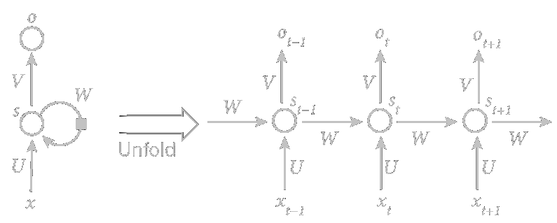</p> <p class="mini muted">In the figure, <span class="math-inline">s<sub>t</sub></span> is the hidden state <span class="math-inline">h<sub>t</sub></span>; U, W, and V are shared at every step.</p> <div class="source">Figure: <a href="https://commons.wikimedia.org/wiki/File:Recurrent_neural_network_unfold.svg">fdeloche, Wikimedia Commons</a>, <a href="https://creativecommons.org/licenses/by-sa/4.0/">CC BY-SA 4.0</a> (colors adapted)</div> -- <!-- .slide: data-visibility="uncounted" class="optional-slide" --> ## Transformers: attention is all you need <div class="equation">Attention(Q, K, V) = softmax(QK<sup>T</sup> / √d<sub>k</sub>) V</div> - **Query = question**: what information am I looking for? - **Key = description**: what does each candidate contain, and how relevant is it to the query? - **Value = content**: the information retrieved from each candidate—not a judgment of how “valuable” it is - **Attention weights**: compare the query with every key, then compute a weighted mixture of the values - **Self-attention**: queries, keys, and values come from the same sequence - **Cross-attention**: queries attend to another source, such as cameras, time steps, BEV cells, or object features -- <!-- .slide: data-visibility="uncounted" class="text-align-center optional-slide" --> <p>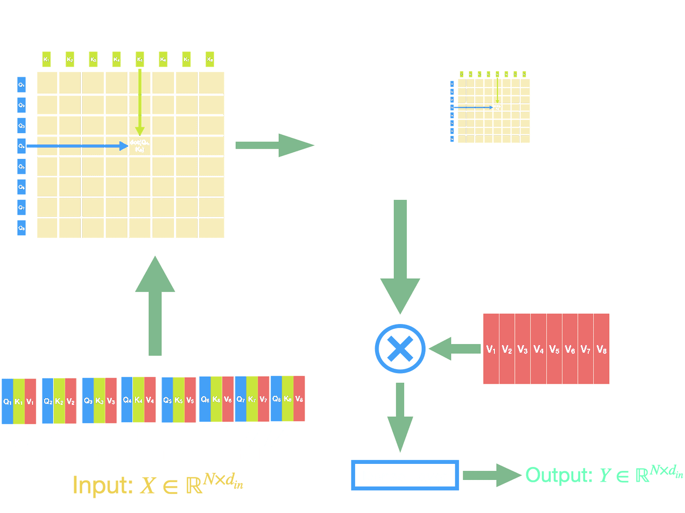</p> -- <!-- .slide: data-visibility="uncounted" class="text-align-center optional-slide" --> <p>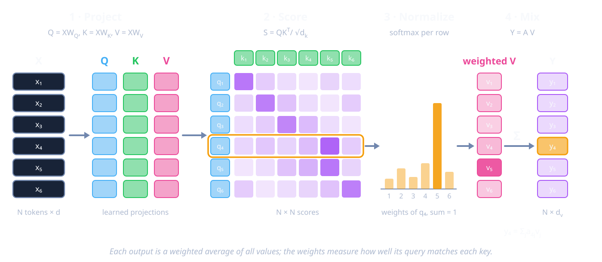</p> Note: Alternative to the previous attention figure: pick one and delete the other. Walk through query 4: it matches key 5 best, so value 5 dominates output 4. -- <!-- .slide: data-visibility="uncounted" class="optional-slide" --> ## Transformers: three details that matter later - **Multi-head attention**: several attention operations run in parallel, each free to specialize in a different relation (appearance, geometry, motion) - **Positional encoding**: attention by itself ignores order and position, so each token carries an explicit position—in driving, often a 3D position derived from camera geometry - **Quadratic cost**: every query scores every key, so cost grows with <span class="math-inline">N<sub>q</sub> × N<sub>k</sub></span>—<span class="math-inline">O(N²)</span> for self-attention <div class="callout example fragment"> <span class="tag">Back of the envelope</span> <p class="mini">A 200 × 200 BEV grid = 40,000 queries; six 900 × 1600 cameras at stride 16 ≈ 34,000 keys<br>→ more than 10⁹ query–key pairs per layer. This is why driving models sample only a few points per query (deformable or sparse attention).</p> </div> -- <!-- .slide: data-visibility="uncounted" class="optional-slide" --> ## Vision Transformers: images as tokens <ul> <li class="fragment" data-fragment-index="0"><strong>Patchify</strong>: split an <span class="math-inline">H × W</span> image into <span class="math-inline">P × P</span> patches, producing <span class="math-inline">N = HW / P²</span> tokens</li> <li class="fragment" data-fragment-index="1"><strong>Embed and locate</strong>: project each flattened patch into a feature vector and add positional information</li> <li class="fragment" data-fragment-index="2"><strong>Attend globally</strong>: from the first layer, each patch can exchange information with any other patch</li> <li class="fragment" data-fragment-index="3"><strong>Dense perception</strong>: hierarchical or windowed variants recover efficient multi-scale features for detection and segmentation</li> </ul> <div class="callout example fragment" data-fragment-index="4"> <span class="tag">Compare with CNNs</span> <p class="mini">ViTs trade strong locality and translation biases for flexible global interactions, usually requiring more data or pretraining</p> </div> -- <!-- .slide: data-visibility="uncounted" class="text-align-center optional-slide" --> <p>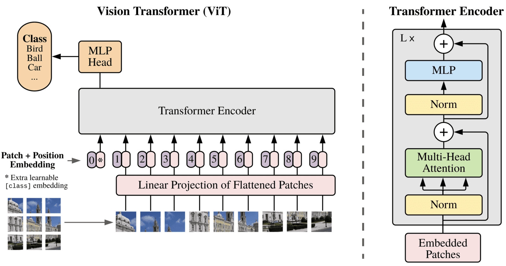</p> <div class="source">Figure: <a href="https://arxiv.org/abs/2010.11929">Dosovitskiy et al., “An Image Is Worth 16×16 Words,” ICLR 2021</a></div> -- <!-- .slide: data-visibility="uncounted" class="optional-slide" --> ## Queries and set prediction <ul> <li class="fragment" data-fragment-index="0"><strong>Query</strong>: a learnable slot that asks the model to find and describe one possible entity</li> <li class="fragment" data-fragment-index="1">Each query attends to scene features and predicts a structured item—or <strong>nothing</strong></li> <li class="fragment" data-fragment-index="2"><strong>Set output</strong>: prediction order has no meaning; only the collection of items matters</li> <li class="fragment" data-fragment-index="3"><strong>One-to-one matching</strong> assigns predictions to targets during training and discourages duplicate outputs (Hungarian matching)</li> <li class="fragment" data-fragment-index="4">The same abstraction can represent objects, lanes, tracks, agents, or possible trajectories</li> </ul> <div class="nav-hint fragment" data-fragment-index="5">Refresher complete — press → for the main talk</div> --- <!-- .slide: class="section-slide" --> # The autonomous-driving stack <br> <p>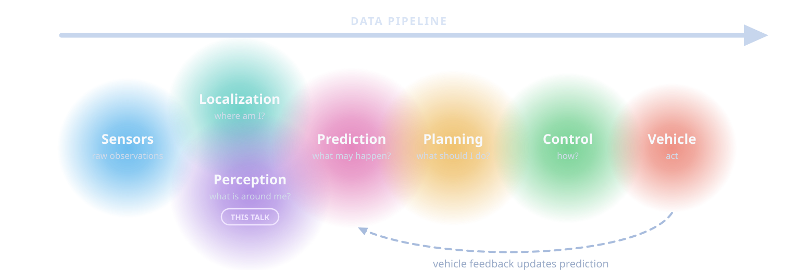</p> Note: Data flows left to right: sensors, localization and perception, prediction, planning, control, vehicle. The circles overlap on purpose: modern systems blur these boundaries (we will see UniAD and PARA-Drive later). The dashed arrow is the closed loop: the ego vehicle's actions change what other agents do, so prediction is never computed on a frozen world. This talk focuses on perception and touches prediction. --- ## Perception is the vehicle’s senses <div class="two-c-container"> <div class="two-c-col"> <p>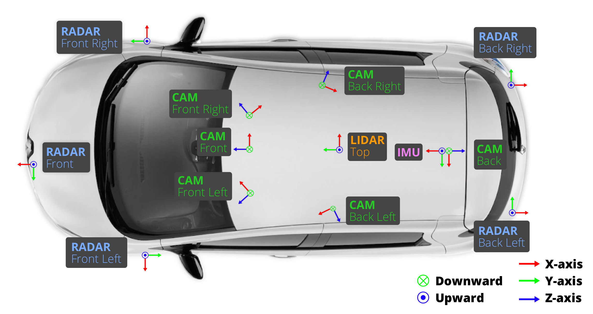</p> </div> <div class="two-c-col"> <ul> <li>Observe the surrounding scene</li> <li>Estimate geometry, semantics, and motion</li> <li>Maintain a temporally consistent world state</li> <li>Expose uncertainty—not just confident guesses</li> </ul> </div> </div> <div class="source">Sensor setup of the nuScenes car — <a href="https://arxiv.org/abs/1903.11027">Caesar et al., CVPR 2020</a></div> Note: Perception is not only object detection. Use this slide to set the broad scope: static structure, dynamic agents, traffic controls, free space, and time. The nuScenes car is a typical research platform: 6 cameras for 360° coverage, 1 roof LiDAR, 5 radars, GNSS and IMU. --- <!-- .slide: class="no-fragments" --> ## Sensors: there is no free lunch <table class="sensor-table"> <thead> <tr><th>Sensor</th><th>Typical range</th><th>Measures well</th><th>Main weaknesses</th><th>Cost</th></tr> </thead> <tbody> <tr><td><b>Camera</b></td><td>~150–250 m (optics-dependent)</td><td>color, texture, signs, lights, lanes; 2–17 MP</td><td>no direct depth; glare, night, blur</td><td>$</td></tr> <tr><td><b>LiDAR</b></td><td>~100–250 m</td><td>metric 3D geometry, cm-level range; 10–20 Hz</td><td>sparse at range; heavy rain, fog, snow</td><td>$$–$$$</td></tr> <tr><td><b>Radar</b></td><td>~200–300 m</td><td>direct radial (Doppler) velocity; works in fog and dark</td><td>coarse angle, few points, multipath “ghosts”</td><td>$</td></tr> <tr><td><b>Ultrasonic</b></td><td>~0.2–5 m</td><td>very-near obstacles at parking speed</td><td>tiny range, slow update</td><td>¢</td></tr> <tr><td><b>Thermal</b></td><td>~100–200 m</td><td>heat contrast: pedestrians and animals at night</td><td>low resolution and texture</td><td>$$</td></tr> <tr><td><b>GNSS / IMU</b></td><td>—</td><td>ego pose and motion (cm-level with RTK)</td><td>IMU drift; GNSS outage and multipath in cities and tunnels</td><td>$–$$</td></tr> </tbody> </table> <p class="mini muted">Typical automotive values; they vary widely by product and price.</p> <p class="thought">Sensor fusion is less like voting and more like a group project: everyone brings different information—and different problems.</p> --- ## Same scene, three sensors <p>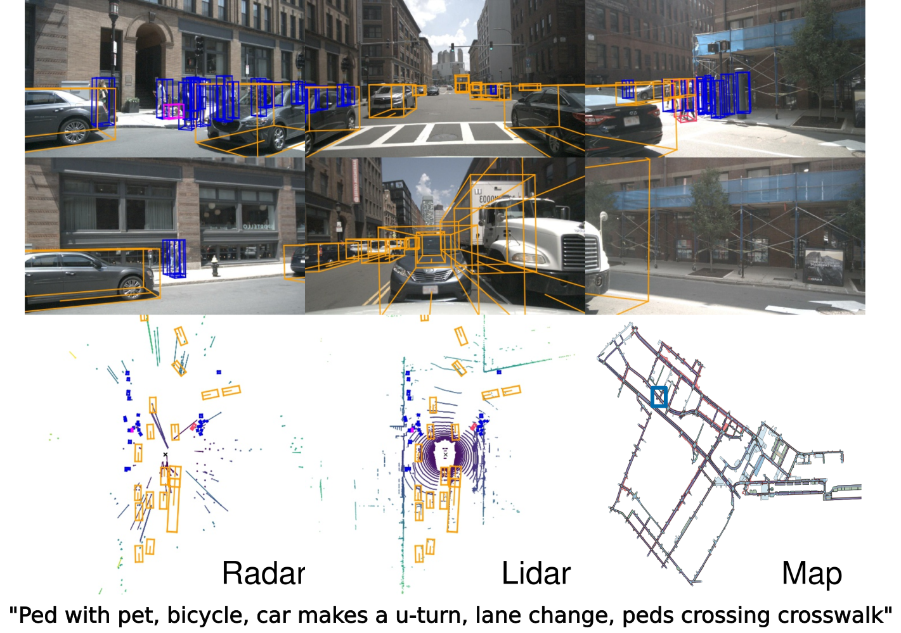</p> <div class="source"><a href="https://arxiv.org/abs/1903.11027">nuScenes — Caesar et al., CVPR 2020</a> (Figure 1)</div> <div class="callout quiz fragment"><span class="tag">Food for thought</span><p class="mini">If a camera recognizes a pedestrian but estimates poor depth, while LiDAR sees a shape but not its class—which sensor is “right”?</p></div> Note: Point out that radar gives only a handful of points per object (but each with velocity), LiDAR gives precise geometry, cameras give semantics. Quiz answer: neither alone. Each is right about a different property; fusion must keep the camera's class and the LiDAR's range, and know which one to trust when they disagree. --- ## Radar is having a moment: 4D imaging radar - **Conventional radar** measures range, azimuth, and Doppler velocity—but has poor elevation: is that return a bridge or a stopped truck? - **4D imaging radar** adds elevation and much finer angular resolution through large virtual antenna arrays (MIMO) - Denser, LiDAR-like point clouds that keep radar's strengths: velocity per point, weather robustness, low cost - Still noisier and sparser than LiDAR; public datasets are recent and small <div class="source"><a href="https://tudelft-iv.github.io/view-of-delft-dataset/">View-of-Delft — Palffy et al., RA-L 2022</a> · <a href="https://github.com/kaist-avelab/K-Radar">K-Radar — Paek et al., NeurIPS 2022</a></div> --- <!-- .slide: class="no-fragments" --> ## What would you mount on the car? <div class="callout poll"> <span class="tag">Quick poll</span><span class="time">60s</span> <p class="mini">Design a perception suite for one scenario:</p> <ul class="mini"> <li>urban robotaxi;</li> <li>highway truck;</li> <li>low-speed delivery robot.</li> </ul> </div> <p class="fragment thought">Now remove one sensor type. What becomes unobservable—or merely less reliable?</p> --- ## What the industry chose - **Waymo (6th generation)**: 13 cameras, 4 LiDARs, 6 radars, and external microphones—redundancy across three modalities - **Tesla Vision**: cameras only—radar removed from 2021, ultrasonic sensors from 2022 - **nuScenes research car**: 6 cameras, 1 LiDAR, 5 radars, GNSS/IMU - Same physics, different bets: cost, scale, operating domain, and how much risk the software must absorb <div class="callout takeaway fragment"><span class="tag">Design rule</span><p class="mini">Choose sensors from the Operational Design Domain—not from a universal ranking.</p></div> <div class="source"><a href="https://waymo.com/blog/2024/08/meet-the-6th-generation-waymo-driver">Waymo, Aug 2024</a> · <a href="https://www.tesla.com/support/transitioning-tesla-vision">Tesla Vision transition</a></div> Note: Reveal after the poll. Ask which of the three poll scenarios each choice fits best. Camera-only bets that learning can recover depth and robustness from data at fleet scale; multi-sensor bets on physical redundancy. --- <!-- .slide: class="section-slide" --> # Four severe problems ### that deserve lectures of their own Calibration · synchronization · ego-motion · failure handling --- ## Calibration and coordinate frames <div class="two-c-container"> <div class="two-c-col"> <h4>Intrinsics</h4> <p>How a camera maps rays to pixels.</p> <h4>Extrinsics</h4> <p>Rigid transforms between sensor, ego, and world frames.</p> </div> <div class="two-c-col"> <h4>The danger</h4> <p>A small angular error becomes a large spatial error far away: 0.5° of yaw is ~0.44 m sideways at 50 m and ~0.9 m at 100 m.</p> <h4>The reality</h4> <p>Temperature, vibration, repairs, and time can change calibration.</p> </div> </div> <div class="equation">p<sub>ego</sub> = T<sub>sensor→ego</sub> · p<sub>sensor</sub></div> --- ## Time alignment, ego-motion, and failures - Sensors expose data at different rates and latencies - The car moves while a camera scans and a LiDAR rotates—one 10 Hz sweep spans 100 ms - Past features must be warped into a common frame before temporal fusion - Failure handling needs detection, degradation, and a safe fallback <div class="failure-row"> <span>timestamp drift</span><span>rolling shutter</span><span>packet loss</span><span>occlusion</span><span>dirty lens</span> </div> <div class="callout activity"><span class="tag">Take seriously</span><p class="mini">A 100 ms timing error at 90 km/h is 2.5 m of travel—what the car covers during one 10 Hz LiDAR sweep. “Almost synchronized” can be geometrically wrong.</p></div> Note: Do not teach calibration in depth here. Emphasize that every later architecture quietly assumes these foundations are sufficiently correct. Without motion compensation, the start and end of a single LiDAR sweep at highway speed disagree by meters. --- <!-- .slide: class="section-slide" --> # Representing the scene <p>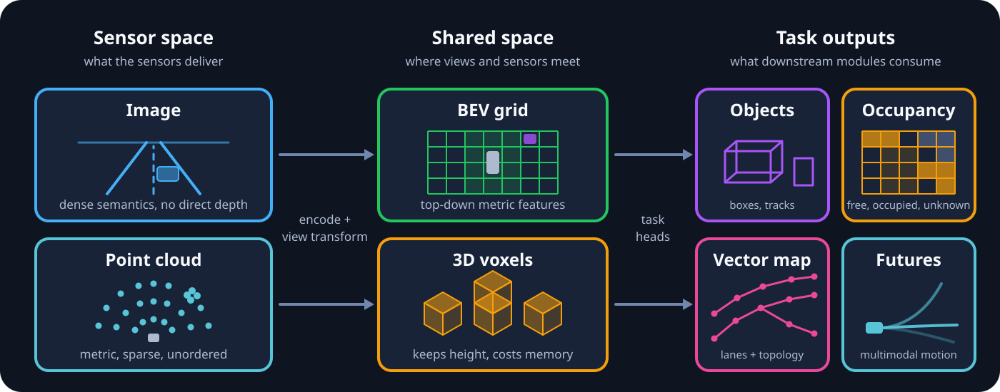</p> --- ## Image space and point clouds - **Perspective images** - Dense semantics; scale changes with depth; occlusion is natural - **Point clouds** - Metric 3D samples; irregular and sparse; density changes with range <p>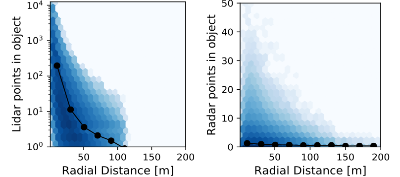</p> <p class="mini muted">LiDAR points inside an object: hundreds at 10 m, fewer than five beyond 50 m. Radar: about one, at any range.</p> <div class="source"><a href="https://arxiv.org/abs/1903.11027">nuScenes — Caesar et al., CVPR 2020</a> (supplementary)</div> --- ## Point clouds need their own encoders - **Point-based (PointNet)**: a shared MLP per point, then a symmetric pooling, so the output ignores point order - **Voxels + sparse convolution (VoxelNet, SECOND)**: quantize space and convolve only where voxels are occupied - **Pillars (PointPillars)**: collapse height into vertical columns, producing a 2D BEV pseudo-image for an ordinary CNN - Most LiDAR detectors end in BEV—so BEV becomes the natural meeting point for cameras too <div class="equation fragment">f(x<sub>1</sub>, …, x<sub>N</sub>) = γ( max<sub>i</sub> h(x<sub>i</sub>) ) — same answer for any ordering of the points</div> <div class="source"> <a href="https://arxiv.org/abs/1612.00593">PointNet — CVPR 2017</a> · <a href="https://arxiv.org/abs/1711.06396">VoxelNet — CVPR 2018</a> · <a href="https://www.mdpi.com/1424-8220/18/10/3337">SECOND — Sensors 2018</a> · <a href="https://arxiv.org/abs/1812.05784">PointPillars — CVPR 2019</a> </div> --- ## Bird’s-eye view (BEV) - A metric top-down grid around the ego vehicle - Aligns multiple cameras and sensors into one spatial frame - Makes size, distance, and motion easier to compare - Friendly to mapping, occupancy, prediction, and planning <div class="thought">BEV is not a task. It is a meeting room where many tasks can argue in the same coordinate system.</div> --- ## From perspective to BEV: the view transform - **Inverse perspective mapping (IPM)**: assume a flat ground and warp the image with a homography—fine for lane paint, wrong for anything above the road - **Lift-Splat (forward projection)**: predict a depth distribution per pixel, lift features along each ray, and splat them into BEV cells - **BEV queries (backward projection)**: each BEV cell projects 3D reference points into the cameras and pulls the features it needs <div class="equation fragment">lift: f(u, v, d) = α<sub>d</sub>(u, v) · c(u, v), with α a softmax over D depth bins</div> <p class="thought fragment">The hard part is always depth: a pixel is a ray, not a point.</p> <div class="source"> <a href="https://arxiv.org/abs/2008.05711">Lift, Splat, Shoot — Philion & Fidler, ECCV 2020</a> · <a href="https://arxiv.org/abs/2203.17270">BEVFormer — Li et al., ECCV 2022</a> </div> --- ## BEVFormer: camera features → BEV queries <p>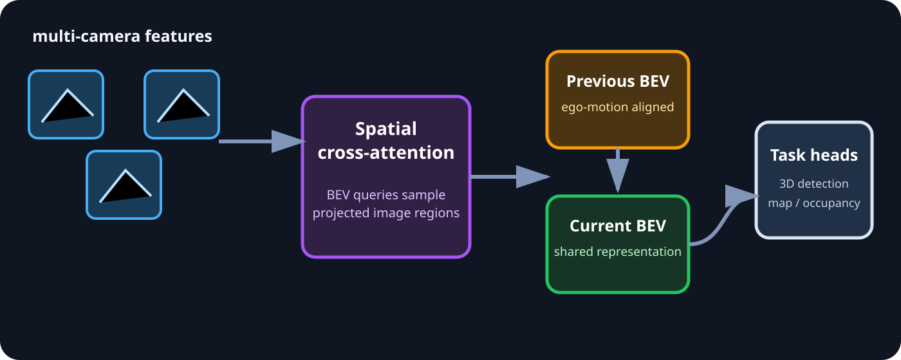</p> - Grid-shaped BEV queries define positions in the ego-centric world - Spatial cross-attention samples relevant multi-camera image features - Temporal self-attention fuses aligned previous BEV features - A shared BEV can support 3D detection and map segmentation <div class="source"><a href="https://arxiv.org/abs/2203.17270">BEVFormer — Li et al., ECCV 2022</a></div> Note: This is backward projection in practice. Deformable attention keeps the cost manageable: each BEV query samples only a few points around its projected reference points (the quadratic-cost problem from the refresher). --- ## BEVFormer in action <video class="diagram" data-autoplay muted loop playsinline src="./videos/bevformer-demo.mp4"></video> <p class="mini muted">Six cameras in, one BEV out: 3D boxes in the BEV (left) and projected back into each camera (right).</p> <div class="source">Demo video: <a href="https://github.com/fundamentalvision/BEVFormer">fundamentalvision/BEVFormer</a></div> --- ## Four complementary outputs - **Object sets** — boxes, classes, velocities, tracks - **Occupancy fields** — free, occupied, semantic, unknown - **Vector maps** — lanes, boundaries, topology - **Future distributions** — possible motions and probabilities <p class="fragment thought">No representation is complete. Boxes are compact; occupancy sees arbitrary shapes; graphs express connectivity.</p> --- ## Perception tasks - **Entities** — detection and tracking - **Fields** — segmentation, free space, occupancy - **Structure** — mapping, topology, association - **Futures** — motion forecasting and occupancy flow - **Cross-cutting** — multimodal fusion and multitask learning <div class="callout takeaway"><span class="tag">Structure</span><p class="mini">We will study each task through its output, architecture idea, failure modes, datasets, and a small project.</p></div> --- <!-- .slide: class="section-slide" --> # Task 1 — Obstacles ### Detect, localize, classify, persist --- ## What is object detection? - **2D:** image-space boxes, class, confidence - **3D:** center <span class="math-inline">(x, y, z)</span>, size <span class="math-inline">(l, w, h)</span>, and yaw <span class="math-inline">θ</span>—7 numbers in the ego frame, plus class and confidence - Often extended with velocity <span class="math-inline">(v<sub>x</sub>, v<sub>y</sub>)</span>, attributes, and uncertainty - Must handle scale, occlusion, truncation, crowded scenes, and long range <p>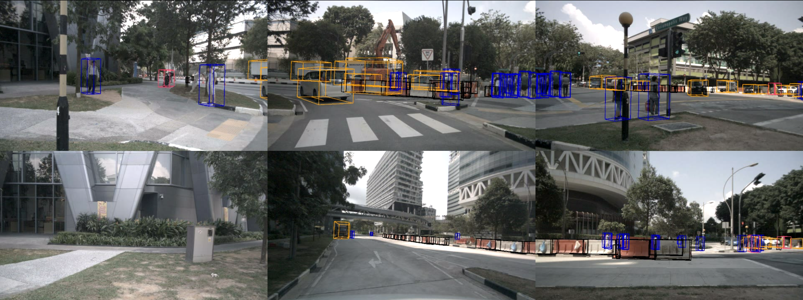</p> <div class="source">Annotated nuScenes sample — <a href="https://github.com/nutonomy/nuscenes-devkit">nuScenes devkit</a></div> --- ## DETR: detection as set prediction <div class="two-c-container"> <div class="two-c-col"> <p>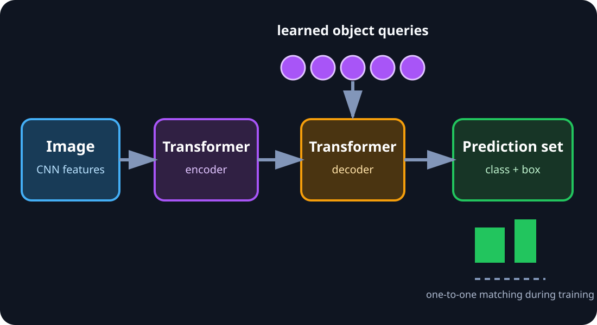</p> </div> <div class="two-c-col"> <ol> <li class="fragment" data-fragment-index="1">Backbone extracts image features</li> <li class="fragment" data-fragment-index="2">Transformer mixes global context</li> <li class="fragment" data-fragment-index="3">Object queries decode candidate objects</li> <li class="fragment" data-fragment-index="4">One-to-one matching trains the set</li> </ol> </div> </div> <div class="source"><a href="https://arxiv.org/abs/2005.12872">DETR — Carion et al., ECCV 2020</a></div> --- ## Why Hungarian matching matters <div class="equation">σ̂ = arg min<sub>σ</sub> Σ<sub>i</sub> L<sub>match</sub>(y<sub>i</sub>, ŷ<sub>σ(i)</sub>)</div> - Assign each ground-truth object to one prediction - Unmatched queries learn the “no object” class - Removes ambiguous many-to-one supervision - Inspired a family of query-based detectors, trackers, and map models <div class="thought">Queries are reusable slots, not tiny object templates waiting at fixed locations.</div> --- ## 3D detection: from DETR to multiple cameras - **LiDAR baseline (CenterPoint)**: encode the sweep into BEV, predict a heatmap of object centers, then regress size, yaw, and velocity - **DETR3D**: each query holds a 3D reference point, projected into every camera to sample image features - **PETR**: adds 3D position embeddings to image features, so plain global attention knows the camera geometry - **StreamPETR**: carries object queries from frame to frame—temporal memory at almost no extra cost <p class="thought fragment">Same trick each time: a query asks the cameras where its 3D point appears.</p> <div class="source"> <a href="https://arxiv.org/abs/2006.11275">CenterPoint — CVPR 2021</a> · <a href="https://arxiv.org/abs/2110.06922">DETR3D — CoRL 2021</a> · <a href="https://arxiv.org/abs/2203.05625">PETR — ECCV 2022</a> · <a href="https://arxiv.org/abs/2303.11926">StreamPETR — ICCV 2023</a> </div> --- ## Tracking: keeping identities over time - **Tracking-by-detection**: detect every frame, predict each track forward (Kalman filter), then match tracks to detections with Hungarian assignment - A simple baseline (AB3DMOT) remains surprisingly competitive - **Query-based tracking (MOTR-style)**: a track query follows its object across frames; fresh detection queries catch newcomers - Tracks provide identity, velocity, and history—exactly what forecasting consumes - Typical failures: identity switches in crowds, lost tracks under occlusion, ghost tracks from false positives <div class="equation fragment">predict x̂<sub>t</sub> = F x<sub>t−1</sub> → Hungarian match to detections → Kalman update</div> <div class="source"> <a href="https://arxiv.org/abs/1907.03961">AB3DMOT — Weng et al., IROS 2020</a> · <a href="https://arxiv.org/abs/2105.03247">MOTR — Zeng et al., ECCV 2022</a> </div> --- ## Try it yourself: detection & tracking - **Datasets:** [KITTI](https://www.cvlibs.net/datasets/kitti/), [BDD100K](https://bdd-data.berkeley.edu/), [nuScenes](https://www.nuscenes.org/nuscenes) (start with nuScenes-mini: 10 scenes), [Waymo Open](https://waymo.com/open/) - **Toolkits:** [MMDetection3D](https://github.com/open-mmlab/mmdetection3d), [OpenPCDet](https://github.com/open-mmlab/OpenPCDet), [nuScenes devkit](https://github.com/nutonomy/nuscenes-devkit) - **Colab-sized:** fine-tune a pretrained [RT-DETR](https://arxiv.org/abs/2304.08069) or [Deformable DETR](https://arxiv.org/abs/2010.04159)—both converge far faster than the original DETR—on a small BDD100K subset - **Evaluation idea:** compare day/night or near/far AP - **Extension:** add a Kalman-filter tracker, temporal consistency, or calibration-error sensitivity --- <!-- .slide: class="section-slide" --> # Task 2 — Fields and occupancy ### What boxes cannot describe --- ## Segmentation and free space - **Semantic segmentation:** assign a class to every pixel or BEV cell - **Instance/panoptic segmentation:** separate individual objects - **Free space:** where the ego vehicle can physically move without collision - **Drivable area:** free space constrained by road rules and semantics <div class="callout quiz"><span class="tag">Important distinction</span><p class="mini">An empty sidewalk may be free of obstacles, but it is not necessarily drivable.</p></div> --- ## 3D semantic occupancy - Predict every voxel/cell as free, occupied, semantic class, or unknown - Represents irregular obstacles that do not fit a box - Makes occlusion and visibility explicit - Costs memory and compute; labels are expensive <p>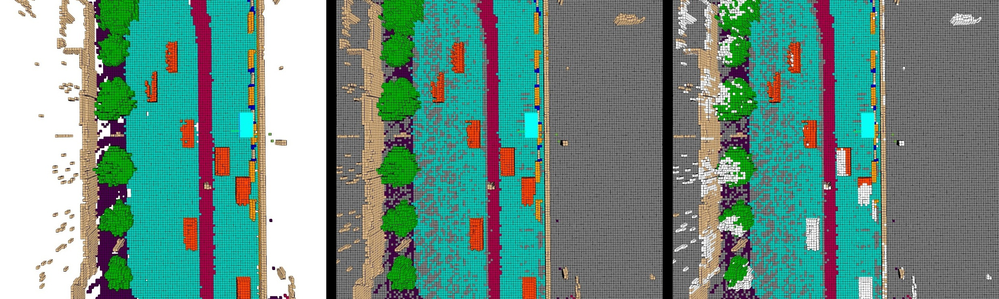</p> <p class="mini muted">Semantic labels (left), LiDAR visibility (middle), camera visibility (right): gray voxels were never observed by LiDAR, white ones are hidden from the current camera.</p> <div class="source"><a href="https://arxiv.org/abs/2304.14365">Occ3D — Tian et al., NeurIPS 2023</a> · figure from <a href="https://github.com/Tsinghua-MARS-Lab/Occ3D">Tsinghua-MARS-Lab/Occ3D</a></div> --- ## Occupancy in action <video class="diagram" data-autoplay muted loop playsinline src="./videos/surroundocc-demo.mp4"></video> <p class="mini muted">Six cameras in (top left), semantic voxels out: road, sidewalk, vegetation, buildings, vehicles.</p> <div class="source">Demo video: <a href="https://github.com/weiyithu/SurroundOcc">SurroundOcc — Wei et al., ICCV 2023</a></div> --- ## PanoOcc: a unified occupancy representation - Camera-based 3D panoptic scene understanding - Voxel queries aggregate multi-frame, multi-view image features - Produces semantic occupancy and instance-aware outputs - Good example of replacing separate dense tasks with one spatial representation <div class="source"><a href="https://openaccess.thecvf.com/content/CVPR2024/html/Wang_PanoOcc_Unified_Occupancy_Representation_for_Camera-Based_3D_Panoptic_Segmentation_CVPR_2024_paper.html">PanoOcc — Wang et al., CVPR 2024</a></div> --- ## SparseOcc: efficiency changes the formulation - Dense 3D volumes spend compute on mostly empty space - Sparse queries and sparse sampling focus on likely occupied regions - Introduces **RayIoU**: voxel mIoU penalizes depth errors inconsistently and can be gamed by predicting thick surfaces; RayIoU casts rays and scores the class and depth of the first occupied voxel - Reported real-time inference demonstrates why representation cost matters <div class="source"><a href="https://www.ecva.net/papers/eccv_2024/papers_ECCV/html/3570_ECCV_2024_paper.php">Fully Sparse 3D Occupancy Prediction — ECCV 2024</a></div> <p class="thought">A perfect representation that misses the real-time deadline is a very detailed description of the recent past.</p> --- ## Current, dynamic, and future occupancy - **Current occupancy:** what fills space now? - **Dynamic state:** which cells move, and how? - **Future occupancy:** where may occupied space move? - Occupancy flow predicts motion over dense space - Useful for objects that are hard to detect or classify - Must separate unknown/unobserved from confidently free --- ## Try it yourself: occupancy & free space - **Datasets:** [Occ3D-nuScenes](https://github.com/Tsinghua-MARS-Lab/Occ3D), [SemanticKITTI](http://www.semantic-kitti.org/), [OpenOccupancy](https://github.com/JeffWang987/OpenOccupancy) - **Toolkits:** [MMDetection3D](https://github.com/open-mmlab/mmdetection3d) and the public SurroundOcc / SparseOcc code bases - **Colab-sized:** build a lightweight image free-space baseline - **Evaluation idea:** compare IoU under rain/night or visibility masks - **Extension:** distill a small occupancy network or compare dense and sparse representations --- <!-- .slide: class="section-slide" --> # Break ### 10 minutes <p class="thought">Your eyes just ran a perception stack for an hour: stereo depth, motion, semantics, and a very aggressive attention mechanism. Let them rest.</p> Note: Halfway point: sensors, representations, detection/tracking, and occupancy are done. After the break: mapping, forecasting, fusion, evaluation, risks, frontiers. --- <!-- .slide: class="section-slide" --> # Task 3 — Mapping and topology ### From pixels to road structure --- ## Which “mapping” do we mean? - **Offline HD-map creation:** build and maintain a global map - **Localization:** estimate ego pose relative to that map - **Online local mapping:** perceive nearby lanes and boundaries now - **Map-change detection:** identify construction or stale map content <div class="thought">A map is a prior, not a law of nature. Roads have an inconvenient habit of changing.</div> --- ## MapTRv2: a map as structured sets <p>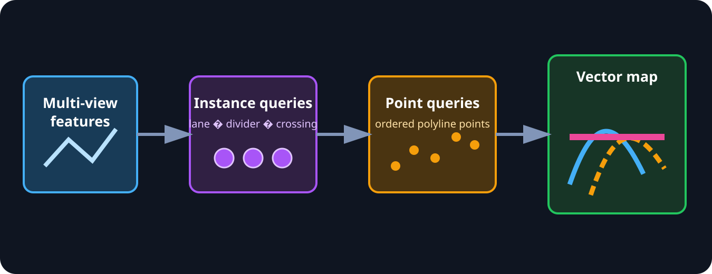</p> - Predict vectorized map elements directly: lanes, dividers, crossings, boundaries - Hierarchical queries model instances and ordered points - Permutation-equivalent modeling handles multiple valid point orderings - One-to-one matching extends the DETR idea from boxes to polylines <div class="source"><a href="https://link.springer.com/article/10.1007/s11263-024-02235-z">MapTRv2 — Liao et al., IJCV 2025</a> · <a href="https://arxiv.org/abs/2308.05736">arXiv</a></div> --- ## Online mapping in action <video class="diagram" data-autoplay muted loop playsinline src="./videos/maptr-demo.mp4"></video> <p class="mini muted">Six cameras in; predicted vector map (PRED) next to the ground truth (GT): dividers, boundaries, and pedestrian crossings.</p> <div class="source">Demo video: <a href="https://github.com/hustvl/MapTR">hustvl/MapTR</a></div> --- ## Topology and traffic-control association - Geometry alone does not say which lanes connect - A traffic light must be linked to the lane(s) it controls - Scene graphs encode lane ↔ lane and lane ↔ traffic-element relations - Association errors can be more dangerous than small geometric errors <div class="callout activity fragment"><span class="tag">Food for thought</span><p class="mini">The light is detected perfectly. It is associated with the wrong lane. Is perception correct?</p></div> <div class="source"><a href="https://arxiv.org/abs/2304.10440">OpenLane-V2 — topology benchmark</a></div> Note: Intended answer: no. For the planner, "which lane does this light control" is part of the perception output; a perfect detection with a wrong association still produces a wrong decision (stopping in a green lane, or worse, going on a red one). This is why OpenLane-V2 scores lane-to-traffic-element topology separately. --- ## TopoMLP: detect first, then reason - Topology reasoning = centerline detection + traffic-element detection + lane–lane and lane–traffic relations - Key finding: topology scores depend mostly on detection quality—with frozen detectors, swapping in ground-truth topology adds little - So: two strong detectors (3D lanes as Bézier curves, 2D traffic elements), then two small MLP heads that score every pair - Simple and strong: 41.2 OLS on OpenLane-V2 with ResNet-50; winner of the first OpenLane Topology challenge <p class="thought fragment">A traffic light you never detected cannot be associated with anything.</p> <div class="source"><a href="https://arxiv.org/abs/2310.06753">TopoMLP — Wu et al., ICLR 2024</a></div> --- ## Try it yourself: mapping & topology - **Datasets:** [Argoverse 2](https://www.argoverse.org/av2.html), [OpenLane-V2](https://github.com/OpenDriveLab/OpenLane-V2), nuScenes maps - **Toolkits:** [MapTR](https://github.com/hustvl/MapTR) and [TopoMLP](https://github.com/wudongming97/TopoMLP) code, [av2 API](https://github.com/argoverse/av2-api) - **Colab-sized:** extract lane centerlines from segmentation - **Evaluation idea:** test polyline simplification or lane-link classification - **Extension:** detect map changes or model traffic-light-to-lane association --- <!-- .slide: class="section-slide" --> # Task 4 — Motion forecasting ### The future is multimodal --- ## What are other agents likely to do? - Input: agent history, map context, traffic state, interactions - Output: multiple future trajectories and their probabilities - Horizon matters: 1 second is control; 6+ seconds is intent and interaction - Forecasting sits at the boundary between perception and planning <p>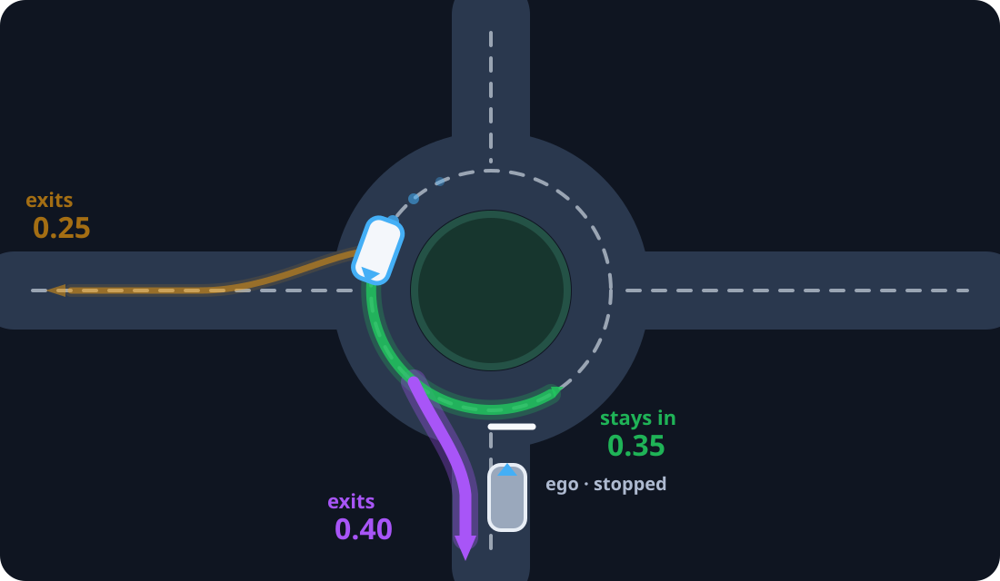</p> --- ## Forecasting inherits perception errors - Benchmarks hand the model clean, curated tracks and an HD map - In the car, inputs come from your own detector, tracker, and online map - Missed detections, identity switches, and jittery headings become forecasting errors - One motivation for joint training (UniAD, PARA-Drive): let forecasting losses shape perception features <p class="thought fragment">Garbage in, multimodal garbage out.</p> --- ## Why one future is not enough <div class="two-c-container"> <div class="two-c-col"> <h4>At an intersection</h4> <ul><li>go straight</li><li>turn left</li><li>yield or stop</li></ul> </div> <div class="two-c-col"> <h4>A useful model needs</h4> <ul><li>diverse modes</li><li>reasonable probabilities</li><li>social consistency</li></ul> </div> </div> <div class="callout takeaway"><span class="tag">Multimodality #2</span><p class="mini">Sensor multimodality means camera + LiDAR + radar. Forecast multimodality means several plausible futures.</p></div> --- ## QCNet: query-centric forecasting <div class="two-c-container"> <div class="two-c-col"> <ul> <li><strong>Agent-centric</strong>: invariant, but recomputed per agent; <strong>scene-centric</strong>: shared, but not invariant</li> <li>QCNet gets both: each element lives in its own local frame, and attention uses relative positions</li> <li>Trajectory queries decode several futures, then refine them</li> <li>A reusable recipe: geometric invariance + queries</li> </ul> </div> <div class="two-c-col-l"> <p>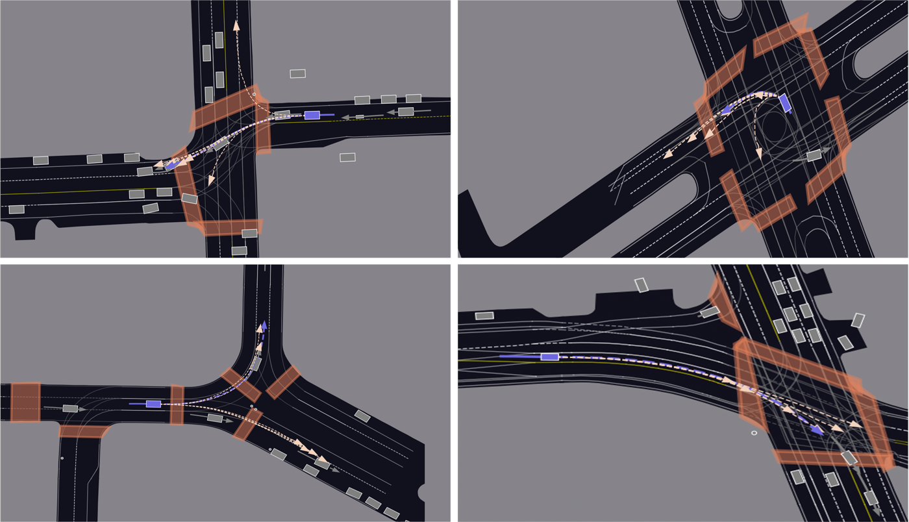</p> </div> </div> <div class="source"><a href="https://arxiv.org/abs/2306.10563">QCNet — Zhou et al., CVPR 2023</a> · figure from <a href="https://github.com/ZikangZhou/QCNet">ZikangZhou/QCNet</a></div> --- ## DONUT: decoder-only trajectory prediction - Autoregressively unroll history and future with one decoder-only model - “Overprediction” adds auxiliary longer-horizon targets - At publication (ICCV 2025): new non-ensemble SOTA on Argoverse 2 single-agent forecasting; newer leaderboard entries have appeared since - Treat SOTA as benchmark- and date-specific—not a universal property <div class="source"><a href="https://openaccess.thecvf.com/content/ICCV2025/html/Knoche_DONUT_A_Decoder-Only_Model_for_Trajectory_Prediction_ICCV_2025_paper.html">DONUT — Knoche et al., ICCV 2025</a></div> --- ## Interaction is the hard part - Agents react to one another and to the ego vehicle - Independent predictions can be mutually impossible - Joint prediction scales combinatorially with agents and modes - The predictor can change behavior when coupled to a planner <div class="callout quiz fragment"><span class="tag">Question</span><p class="mini">If six trajectories are predicted and one matches perfectly—but receives 1% probability—is that a good forecast?</p></div> Note: Intended answer: it depends on the metric, and that is the point. minADE/minFDE only look at the best of the six, so they call it perfect. Probability-aware metrics (Brier-minFDE, NLL) punish it, and so would a planner, which will treat a 1% future as nearly impossible. Sets up the metrics section. --- ## Try it yourself: motion forecasting - **Datasets:** [Argoverse 2 Motion Forecasting](https://www.argoverse.org/av2.html), [Waymo Motion](https://waymo.com/open/data/motion/) - **Toolkits:** [av2 API](https://github.com/argoverse/av2-api) and the public [QCNet](https://github.com/ZikangZhou/QCNet) code - **Colab-sized:** compare constant velocity, GRU, and a compact Transformer - **Evaluation idea:** measure both displacement error and calibration - **Extension:** add map context, interaction, or probability calibration --- <!-- .slide: class="section-slide" --> # Multimodal and multitask perception One shared world, many sensors, many outputs --- ## Where should sensor fusion happen? <div class="fusion-levels"> <div><b>Early</b><small>raw measurements</small></div> <div><b>Feature</b><small>image / point / BEV features</small></div> <div><b>Object</b><small>detections and tracks</small></div> <div><b>Decision</b><small>late agreement</small></div> </div> - Early fusion preserves information but needs tight alignment - Late fusion is modular but may discard useful cross-modal cues - Missing sensors and calibration errors must be part of training and testing --- ## BEVFusion: meet in a common space - Camera and LiDAR features are independently encoded - Cameras are lifted to BEV (Lift-Splat style), LiDAR is flattened to BEV, then the two are fused - The common metric frame simplifies multi-task heads: 3D detection and map segmentation - Real deployment question: what happens when one modality disappears? <video class="diagram strip" data-autoplay muted loop playsinline src="./videos/bevfusion-demo.mp4"></video> <div class="source"><a href="https://arxiv.org/abs/2205.13542">BEVFusion — Liu et al., ICRA 2023</a> · demo from <a href="https://github.com/mit-han-lab/bevfusion">mit-han-lab/bevfusion</a></div> --- ## Multitask learning <div class="two-c-container"> <div class="two-c-col"> <h4>Why share?</h4> <ul><li>compute efficiency</li><li>shared geometry</li><li>richer supervision</li></ul> </div> <div class="two-c-col"> <h4>Why not?</h4> <ul><li>negative transfer</li><li>loss balancing</li><li>coupled failures</li></ul> </div> </div> <div class="thought">A shared backbone can learn common sense—or become the single point where every task fails together.</div> --- ## UniAD: planning-oriented integration - Query-based interfaces connect tracking, mapping, motion prediction, occupancy, and planning - Joint optimization makes downstream objectives visible upstream - Influential research design, not proof that modular systems are obsolete - Integration improves information flow but complicates diagnosis and safety evidence <div class="source"><a href="https://arxiv.org/abs/2212.10156">UniAD — Hu et al., CVPR 2023 Best Paper</a></div> --- ## UniAD in action <video class="diagram" data-autoplay muted loop playsinline src="./videos/uniad-demo.mp4"></video> <p class="mini muted">One network: tracked agents, predicted motion, occupancy, and the planned ego path (BEV, right) from six cameras.</p> <div class="source">Demo video: <a href="https://github.com/OpenDriveLab/UniAD">OpenDriveLab/UniAD</a></div> --- ## PARA-Drive: parallel multitask learning - Co-trains **online mapping**, **tracking + motion prediction**, **occupancy**, and **motion planning** - Every task uses its own learnable queries over shared current and historical BEV features - Modules run in parallel instead of forming a sequential dependency chain - The planning head can run independently after training; other heads may run less frequently - Reported nearly **3× faster** runtime while retaining interpretable task outputs <div class="source"><a href="https://openaccess.thecvf.com/content/CVPR2024/html/Weng_PARA-Drive_Parallelized_Architecture_for_Real-time_Autonomous_Driving_CVPR_2024_paper.html">PARA-Drive — Weng et al., CVPR 2024</a></div> --- <!-- .slide: class="section-slide" --> # Measuring perception A leaderboard is not a driver's license. --- ## Detection and tracking metrics - **AP / mAP:** precision–recall across classes and thresholds - **NDS:** nuScenes mAP plus translation, scale, orientation, velocity, attributes - **mAP / mAPH:** Waymo detection with heading-aware quality - **AMOTA / ID errors:** tracking quality and association consistency - Slice by distance, object size, class, occlusion, weather, and time of day - Averages can hide exactly the rare cases that matter --- ## Occupancy and mapping metrics - **IoU / mIoU:** overlap per semantic class - **RayIoU:** evaluates first-surface consistency along rays - Distinguish **free**, **occupied**, and **unobserved/unknown** - **Vector-map AP:** match polylines within distance thresholds - **Topology metrics:** score lane links and traffic-element associations <div class="callout takeaway"><span class="tag">Metric design</span><p class="mini">If the metric ignores visibility, the model may be punished for refusing to hallucinate behind a truck.</p></div> --- ## Forecasting metrics - **minADE<sub>K</sub>:** best average displacement error among K modes - **minFDE<sub>K</sub>:** best final displacement error - **Miss rate:** fraction outside an endpoint tolerance - **Brier / NLL / calibration:** whether probabilities mean what they claim <div class="warning">Best-of-K can reward “spray and pray”: generate many modes and hope one is close.</div> --- ## System KPIs - **Latency:** include pre-processing and post-processing - **Throughput:** sustain required sensor rates - **Memory and power:** measure on target hardware - **Graceful degradation:** test dropout, corruption, and misalignment - **Calibration:** compare confidence with observed error - **Safety slices:** near field, vulnerable road users, and rare events <p class="thought">The planner cannot brake for a high mIoU score.</p> --- <!-- .slide: class="section-slide" --> # Risks and hard problems Perception fails in distributions, not only in averages. --- ## The long tail and the open world - Rare objects: fallen cargo, unusual vehicles, animals, debris - Rare combinations: glare + rain + construction + occlusion - Unknown objects may not fit any training class - Data collection naturally oversamples ordinary driving <div class="callout activity fragment"><span class="tag">Food for thought</span><p class="mini">How many kilometers must we drive to observe an event that occurs once every 100 million kilometers—often enough to validate it?</p></div> Note: Intended answer: far more than 100 million. With zero failures, showing a rate below 1 per 100 million km at 95% confidence needs about 300 million failure-free km (rule of three); comparing against human drivers with statistical power needs billions. RAND's "Driving to Safety" (Kalra & Paddock, 2016) makes the same argument in miles. This is why simulation and scenario-based testing matter. --- ## Uncertainty, confidence, and bias - Neural confidence is not automatically calibrated probability - Epistemic uncertainty: the model lacks knowledge - Aleatoric uncertainty: the scene itself is ambiguous - Dataset geography, lighting, annotation, and demographic imbalance affect error rates - A safe interface needs “I do not know” and measurable fallback behavior --- ## Corruption, domain shift, and silent failure <div class="failure-row"> <span>fog</span><span>glare</span><span>snow</span><span>dirty sensor</span><span>new city</span><span>sensor dropout</span> </div> - Cross-sensor misalignment can poison fusion instead of helping - Temporal models can propagate one bad observation - Shared multitask features can spread a failure across outputs - Monitoring must detect changing data and changing error patterns <div class="source"><a href="https://openaccess.thecvf.com/content/CVPR2023/html/Dong_Benchmarking_Robustness_of_3D_Object_Detection_to_Common_Corruptions_CVPR_2023_paper.html">nuScenes-C robustness benchmark — CVPR 2023</a></div> --- ## Offline accuracy ≠ closed-loop safety - A detector metric weights errors differently from a planner - Small map-topology errors can cause large route errors - The planner may compensate for some perception mistakes—and amplify others - Deployment changes the data distribution through feedback <div class="warning">Necessary: strong offline metrics. Insufficient: claiming safe driving from offline metrics alone.</div> Note: Keep this section compact and perception-focused. The goal is critical thinking, not a second AI-safety lecture. --- <!-- .slide: class="section-slide" --> # Frontiers Simulation · world models · end-to-end · VLM/VLA --- ## Generative AI for simulation - **Generative**: synthesize scenes, actors, weather, and sensor observations—target rare scenarios that are expensive or dangerous to collect - **Reconstruction-based**: rebuild a recorded drive as an editable digital twin (NeRF, 3D Gaussian splatting), then move actors and the ego vehicle and re-render camera and LiDAR for closed-loop tests - Edit an observed scene while preserving controllable factors - Use synthetic data for training, validation, and stress testing <div class="callout quiz fragment"><span class="tag">But</span><p class="mini">Photorealistic is not the same as physically correct, causally useful, or safety-representative.</p></div> <div class="source"><a href="https://arxiv.org/abs/2309.09777">DriveDreamer</a> · <a href="https://arxiv.org/abs/2309.17080">GAIA-1</a> · <a href="https://arxiv.org/abs/2308.01898">UniSim — CVPR 2023</a> · <a href="https://arxiv.org/abs/2401.01339">Street Gaussians — ECCV 2024</a></div> --- ## Learned world models - Learn how scenes evolve under actions - Predict future observations, latent states, or occupancy - Support imagination, planning, and data generation - Need action consistency, interaction realism, and uncertainty—not only good video <div class="thought">A video model can predict plausible pixels. A driving world model must predict the consequences of decisions.</div> --- ## End-to-end driving <p>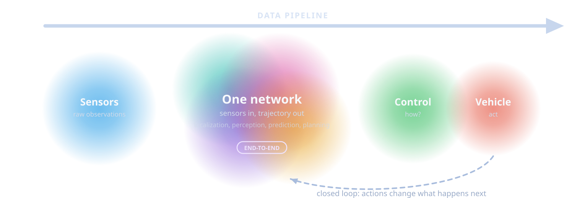</p> - **Modular:** interpretable interfaces and local validation - **End-to-end:** sensors in, trajectory out—joint optimization, but difficult diagnosis - The real spectrum includes modular, jointly trained (UniAD, PARA-Drive), and fully end-to-end systems Note: Callback to the stack from the beginning: the overlapping circles were a hint. End-to-end is the limit where they merge into one network. --- ## How do we know an end-to-end driver is good? - **Open-loop** (nuScenes): compare the planned path with the logged human path—cheap, but the car never sees the consequences - On nuScenes, 73.9% of the data is straight driving; an MLP that sees only ego status (velocity, acceleration, yaw) matches state-of-the-art planners on L2 and collision rate - **Non-reactive simulation** (NAVSIM): score progress, collisions, and comfort on real data over a short horizon - **Closed-loop** (CARLA, Bench2Drive): the policy drives, and the world reacts <p class="thought fragment">If a model ignoring every camera matches your planner, the benchmark is grading the speedometer.</p> <div class="source"> <a href="https://arxiv.org/abs/2312.03031">Is Ego Status All You Need? — Li et al., CVPR 2024</a> · <a href="https://arxiv.org/abs/2406.15349">NAVSIM — NeurIPS 2024</a> · <a href="https://arxiv.org/abs/2406.03877">Bench2Drive — NeurIPS 2024</a> </div> --- ## VLMs, VLAs, and open-vocabulary perception - **VLM:** connect visual features and language concepts - **VLA:** condition actions on vision and language/instructions - **Open-vocabulary perception:** detect or segment from text queries (“fallen mattress”, “horse cart”) instead of a fixed class list—a direct attack on the open-set obstacles from the risks section - Potential: semantic reasoning, explainable interfaces - Risks: hallucination, latency, weak grounding, unfaithful explanations <div class="source"><a href="https://arxiv.org/abs/2312.14150">DriveLM</a> · <a href="https://arxiv.org/abs/2410.23262">EMMA</a></div> --- ## Open problems worth working on - Open-world obstacles and calibrated uncertainty - Rare-event evaluation and sensor degradation - Efficient occupancy and map-change detection - Joint forecasting and causally useful simulation - Verifiable end-to-end driving <div class="callout takeaway"><span class="tag">Research compass</span><p class="mini">Improve not only average accuracy, but observability, uncertainty, efficiency, and evidence under failure.</p></div> --- ## Project ladder - **Course project:** pretrained model + small dataset slice + one clear hypothesis - **Strong project:** add temporal context, calibration, robustness, or a lightweight architecture change - **Thesis with us:** occupancy efficiency, sensor degradation, topology, multimodal forecasting, or simulation-to-real validation <p class="thought">Small and well-measured beats large and impossible to reproduce.</p> --- ## Takeaways 1. Perception is the vehicle’s **senses**, not merely object detection. 2. Sensors offer complementary information—and complementary failures. 3. Representations shape what downstream tasks can know. 4. Detection, occupancy, mapping, and forecasting answer different questions. 5. Metrics need scenario slices, uncertainty, and deployment KPIs. 6. Frontiers are exciting; reliability remains the admission ticket. --- <!-- .slide: class="title-slide end-slide" --> # Questions? ### Discussion prompts - Which perception output would you trust least today? - Boxes, occupancy, or vectors: what should the primary scene representation be? - What evidence would convince you that a world model improves safety? <div class="title-meta"> <span>Gabriele Graffieti</span> <span>Deep Learning Perception for Autonomous Driving</span> </div>